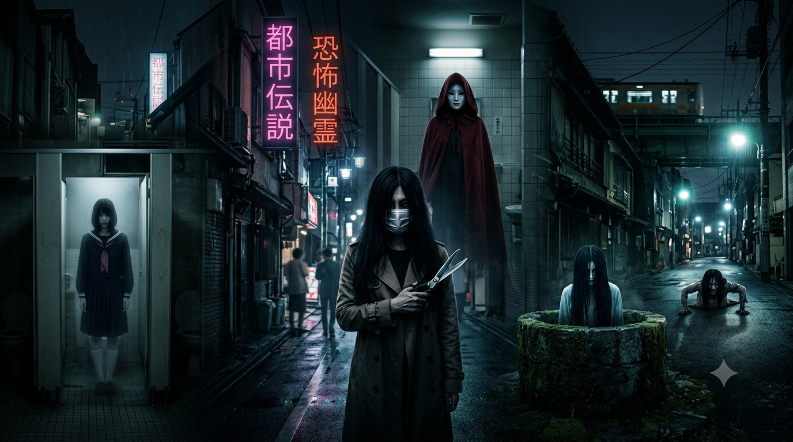
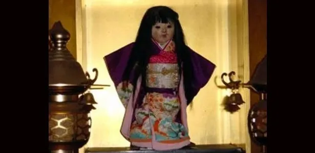
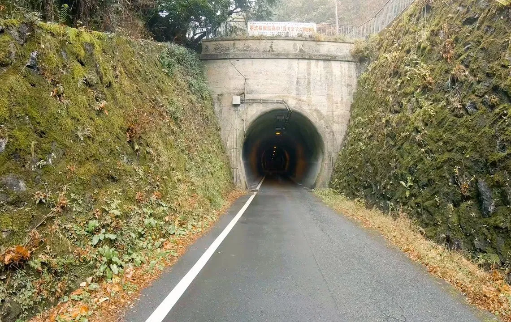

Meu primeiro post
By: Hillary Bello
Sejam bem vindos ao meu novo post! Aqui vou contar sobre as Lendas Urbanas do Japão, alguns casos reais e entre outras.
As lendas urbanas do Japão são mitos modernos de terror que misturam o folclore tradicional de fantasmas (yūrei) com as ansiedades da vida urbana contemporânea.
Diferente dos monstros antigos que habitavam florestas e montanhas, essas criaturas assombram espaços cotidianos, como banheiros de escolas, estações de trem, becos escuros e cabines telefônicas. A essência dessas histórias baseia-se em regras estritas de sobrevivência e no terror psicológico. Os encontros geralmente envolvem um teste ou uma pergunta feita pela assombração (como escolher uma cor ou responder se alguém é bonito). Errar a resposta ou violar a etiqueta social da lenda resulta em punições violentas, mutilação ou morte. Muitas dessas narrativas surgiram ou ganharam força na segunda metade do século XX, servindo como alertas modernos sobre os perigos de andar sozinho à noite, a pressão escolar e o medo do desconhecido nas grandes metrópoles.
A Boneca de Okiku

A lenda da Boneca de Okiku é um dos relatos sobrenaturais mais famosos do Japão por envolver um objeto real que existe até hoje, sendo mundialmente conhecida pelo fenômeno bizarro de ter cabelos humanos que crescem continuamente. A história começou em 1918, quando um jovem chamado Eikichi Suzuki comprou uma boneca tradicional com trajes de quimono em Sapporo para presentear sua irmã de dois anos, chamada Kikuko. A garotinha se apegou profundamente ao brinquedo, mas faleceu no ano seguinte devido a uma grave pneumonia. Devastada com a perda precoce, a família colocou a boneca no altar da casa junto às cinzas da menina para cultuar e homenagear a sua memória. Pouco tempo depois, os familiares notaram algo considerado impossível: o cabelo da boneca, originalmente cortado de forma reta na altura do queixo no estilo tradicional japonês, estava crescendo sozinho. Os fios passaram da linha dos ombros e chegaram até a cintura, fazendo com que os pais passassem a acreditar que a alma da pequena Kikuko havia habitado o brinquedo para permanecer perto deles. Em 1938, a família precisou se mudar e decidiu deixar a boneca sob os cuidados do Templo Mannenji, localizado em Hokkaido, onde ela permanece guardada até os dias de hoje. Os monges do local afirmam que o cabelo continua a crescer continuamente e realizam um ritual periódico para aparar os fios da entidade. Análises científicas realizadas no passado apontaram que a estrutura capilar do brinquedo é biologicamente idêntica à de uma criança humana
Túnel Kiyotaki

O Túnel Kiyotaki, localizado na província de Kyoto, é considerado um dos lugares reais mais assombrados e perigosos de todo o Japão. Construído em 1927, o túnel possui cerca de 444 metros de extensão, um número altamente associado à morte na cultura japonesa, já que a palavra para o número quatro tem a mesma pronúncia da palavra morte no idioma local. A fama de maldito começou durante a sua construção, pois o túnel foi erguido sob condições de trabalho escravas e brutais, resultando na morte de muitos operários devido a desabamentos, exaustão e acidentes graves, cujos corpos teriam sido enterrados nas próprias paredes da estrutura. Além disso, o local foi cenário de diversos suicídios ao longo das décadas, incluindo o caso marcante de uma mulher que se enforcou em uma árvore próxima na década de 1990. Motoristas e pedestres relatam diversos encontros sobrenaturais ao cruzar o túnel à noite, começando pela armadilha do semáforo localizado logo antes da entrada, onde a lenda diz que se o sinal estiver verde quando você se aproximar, você não deve entrar, pois o verde seria um convite dos espíritos para uma armadilha fatal, sendo o correto esperar o sinal ficar vermelho, voltar a ficar verde e só então prosseguir. Outros relatos afirmam que fantasmas de trabalhadores e de pessoas que cometeram suicídio saltam do topo do túnel direto para o capô dos carros para quebrar o para-brisa e causar acidentes. Há também um espelho convexo no interior do túnel, e quem olhar para ele e enxergar o reflexo de um fantasma sofrerá uma morte terrível e iminente. Durante a travessia, motoristas frequentemente relatam que os painéis digitais enlouquecem, os faróis piscam sozinhos e passageiros invisíveis parecem sentar no banco traseiro do veículo
Teke-Teke
A lenda de Teke Teke narra a história do fantasma de uma estudante que morreu tragicamente ao cair nos trilhos de uma estação de trem, tendo seu corpo cortado ao meio por uma locomotiva. O trauma e o sofrimento extremo transformaram sua alma em um espírito vingativo conhecido como onryō, que passou a vagar por estações ferroviárias e ruas escuras durante a noite. Como não possui a metade inferior do corpo, a assombração se locomove correndo rapidamente com as palmas das mãos e os cotovelos, gerando um som arrastado característico que soa exatamente como teke teke teke no asfalto. Apesar de sua limitação física, o espírito consegue se mover em uma velocidade surpreendente, sendo capaz de alcançar pessoas que estão correndo a pé ou até mesmo pedalando em bicicletas. Ao capturar sua vítima, a entidade utiliza uma foice ou uma lâmina afiada para cortá-la ao meio na altura da cintura, duplicando o seu próprio destino trágico e condenando a pessoa a sofrer o mesmo fim.
Kuchisake-Onna
A lenda de Kuchisake-onna narra a história do espírito vingativo de uma mulher alta e de cabelos pretos longos que vaga pelas ruas desertas do Japão vestindo um casaco comprido e usando uma máscara cirúrgica para esconder uma terrível mutilação na boca. A lenda conta que ela aborda pedestres solitários à noite, geralmente crianças e estudantes, e faz a perturbadora pergunta se ela é bonita. Se a vítima responder que não, ela a mata imediatamente utilizando uma grande tesoura que carrega oculta. Se a pessoa responder que sim, a mulher remove a máscara cirúrgica para revelar que sua boca está cortada de orelha a orelha em um sorriso grotesco, repetindo a pergunta se ela continua bonita mesmo assim. Uma resposta negativa após a revelação resulta na morte instantânea da vítima, enquanto uma resposta positiva faz com que o espírito corte a boca da pessoa da mesma forma para que ela fique idêntica a ela. A única maneira conhecida de escapar ileso desse encontro é dar uma resposta ambígua que confunda a entidade, como dizer que ela parece comum ou está na média, o que a deixa pensativa por tempo suficiente para que a vítima consiga fugir.